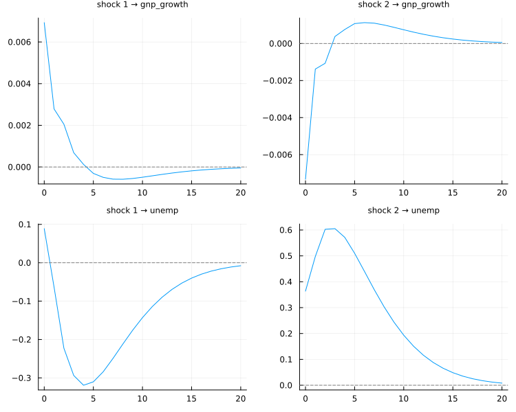

API: Structural VAR
A Blanchard-Quah decomposition of GNP growth and unemployment: the supply shock is the one allowed a permanent effect on output, the demand shock is not. The worked explanation is in Manual: Structural VAR.
using TSAnalytics, Plots
e = dataset("econ5")
Y = (gnp_growth = diff(log.(e.gnp)), unemp = e.unemp[2:end])
plot(irf(blanchard_quah(fit_var(Y, 2)), 20); size = (750, 600))
TSAnalytics.fit_svar — Function
fit_svar(m::VARModel; A=nothing, B=nothing, method=:scoring,
maxiter=200, tol=1e-10) -> SVARModelEstimate a structural VAR on the fitted reduced form m:
A u_t = B ε_t, ε_t ~ (0, I_K), so Σ_u = A⁻¹ B B' A'⁻¹Give A (an A-model, B = I), B (a B-model, A = I) or both (an AB-model), as K × K matrices with missing marking the free elements and numbers fixing the rest:
fit_svar(m; A = [1.0 0.0; missing 1.0], B = [missing 0.0; 0.0 missing])missing, not NaN: NaN is refused by name. [V] statsmodels' marker is the string "E", and passing np.nan instead silently gives it an empty set of parameters and an opaque error.
Identification is checked first
Σ_u has K(K+1)/2 distinct elements, so at most that many parameters can be identified (Lütkepohl 2005, §9.1.2):
- more free parameters than
K(K+1)/2, or free parameters at the same position inAandB: refused before any optimization —[V]varsdoes the same;statsmodelsfails deep inside with a singular-matrix error; - exactly
K(K+1)/2: just-identified —A⁻¹B(A⁻¹B)' = Σ_uexactly, and there is nothing to test; - fewer: over-identified — the restrictions are testable, and
lr_testcarries the likelihood-ratio statistic2(ℓ_u − ℓ_r) = T(ln|Σ̃_r| − ln|Σ̃_u| + tr(Σ̃_r⁻¹Σ̃_u) − K)onK(K+1)/2 − nfreedegrees of freedom. Lütkepohl's (andvars') form drops the trace term, which is zero only when the structural variances are free; where they are pinned the short form is not a likelihood ratio and changes with the units of the data.
The rank condition is checked too: a specification whose information matrix is singular is refused rather than handed to the optimizer.
A = [1 0; missing 1] alone has one free parameter for a 2 × 2 Σ_u: it also forces both structural variances to one. It is the A-model vars and statsmodels are usually shown with, and on var2_p1 the likelihood ratio rejects it (LR = 31.8 on 2 df). [V] vars reports 121.6: its short-form statistic, which here is −T ln|Σ_u|. The just-identified recursive model is A = [1 0; missing 1] with a free diagonal B, or a lower-triangular free B — both reproduce the Cholesky factor exactly. (statsmodels reports the reduced-form log-likelihood as its SVAR llf whatever the restrictions, which hides this.)
Estimation
method = :scoring (default) is Amisano & Giannini's scoring algorithm — Newton steps with the expected information — which is what vars::SVAR(estmethod = "scoring") uses; :mle maximizes the same likelihood with _optimize's quasi-Newton method. Both start from a feasible point built from Σ_u. [V] vars' estmethod = "direct" stops short of the optimum (A₂₁ = −0.293750… against −0.293821) and R warns about it; it is not reproduced.
The likelihood is concentrated with the reduced form's degrees-of-freedom-adjusted Σ_u (m.sigma_df), which is what both references decompose — [V] their P P' is Σ_df. So loglik at a just-identified optimum is the Gaussian log-likelihood at Σ_df, which differs from loglikelihood(m) (computed at the ML Σ) by T/2 (ln|Σ_df| − ln|Σ_ml|); the LR test compares like with like.
Standard errors are the square roots of the inverse information matrix for the free parameters. Structural impulse responses and variance decompositions are irf(s, h) and fevd(s, h).
julia> using TSAnalytics, DelimitedFiles
julia> Y = readdlm(joinpath(dirname(pathof(TSAnalytics)), "..", "test",
"fixtures", "var", "var2_p1.csv"), ','; skipstart=1);
julia> m = fit_var(Y, 2);
julia> s = fit_svar(m; A = [1.0 0.0; missing 1.0], B = [missing 0.0; 0.0 missing]);
julia> s.lr_test === nothing # just-identified
true
julia> s.P * s.P' ≈ m.sigma_df
true
julia> round(s.A[2, 1]; digits=6)
-0.293821See also blanchard_quah, irf.
TSAnalytics.blanchard_quah — Function
blanchard_quah(m::VARModel) -> SVARModelBlanchard & Quah's (1989) long-run identification: the structural shocks are orthogonal and the long-run impact matrix Ξ = (I − Σ_j A_j)⁻¹ B is lower triangular — the last shock has no permanent effect on the first variable, and so on. It is just-identified and has a closed form:
Ξ = chol(Ψ_∞ Σ_u Ψ_∞')ᴸ, B = (I − Σ_j A_j) Ξ, A = Iwith Ψ_∞ = (I − Σ_j A_j)⁻¹ and Σ_u the degrees-of-freedom-adjusted residual covariance. B B' = Σ_u exactly, and lrim is lower triangular exactly — both asserted in the test suite with no reference involved. [V] B and lrim match vars::BQ; statsmodels has no equivalent.
An unstable VAR is refused: the long-run matrix Ψ_∞ does not exist when a companion root is on or outside the unit circle, which is the same refusal as lr_effects. vars::BQ inverts I − Σ A_j regardless.
julia> using TSAnalytics, DelimitedFiles
julia> Y = readdlm(joinpath(dirname(pathof(TSAnalytics)), "..", "test",
"fixtures", "var", "var2_p1.csv"), ','; skipstart=1);
julia> bq = blanchard_quah(fit_var(Y, 2));
julia> round.(bq.lrim; digits=4)
2×2 Matrix{Float64}:
1.7871 0.0
1.0737 1.1792TSAnalytics.SVARModel — Type
SVARModel <: TimeSeriesModelA structural VAR, returned by fit_svar or blanchard_quah: the reduced form var, and the structural matrices in A u_t = B ε_t, ε_t ~ (0, I).
svar_type::A,:B,:ABor:bq.A,B: the estimates;A_mask,B_maskmark the free elements.stderr_A,stderr_B: asymptotic standard errors of the free elements (zero on restricted ones), from the inverse information matrix;nothingfor Blanchard-Quah, which is a closed-form transformation.P = A⁻¹B: the impact matrix — what the structural impulse responses multiply the moving-average matrices by.lrim: the long-run impact matrix(I − Σ A_j)⁻¹ P(Blanchard-Quah only; lower triangular by construction).loglik: the concentrated structural log-likelihood (seefit_svarfor theΣit uses).lr_test:(; statistic, df, pvalue)for an over-identified model,nothingfor a just-identified one.converged,iterations,method.